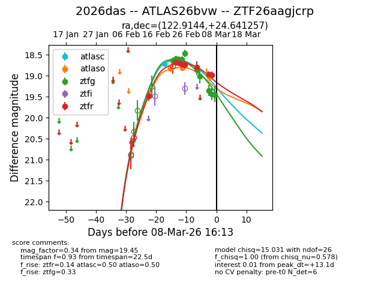
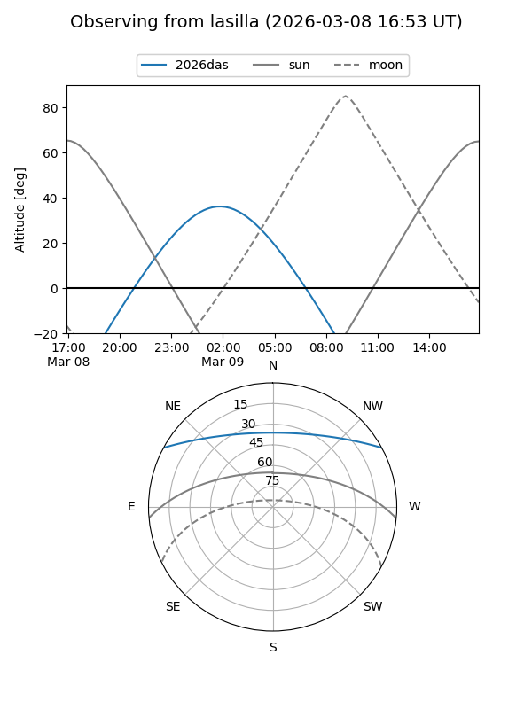
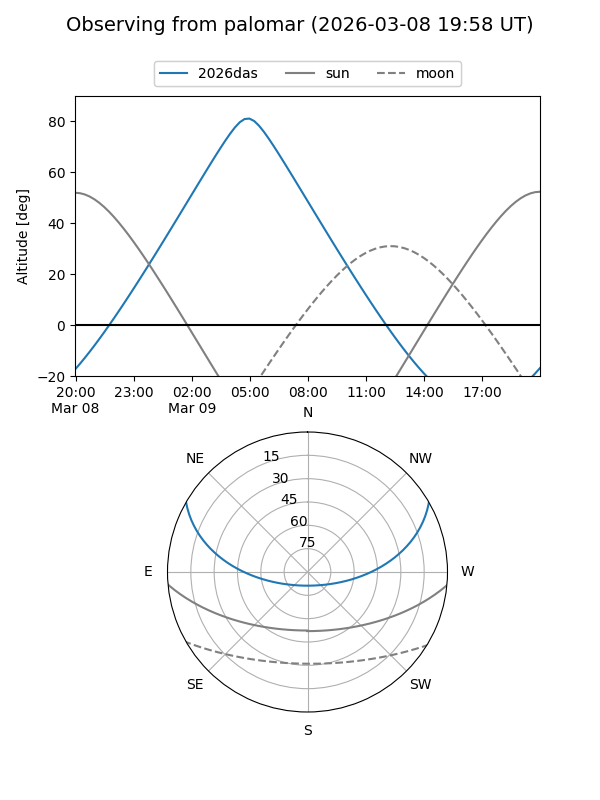
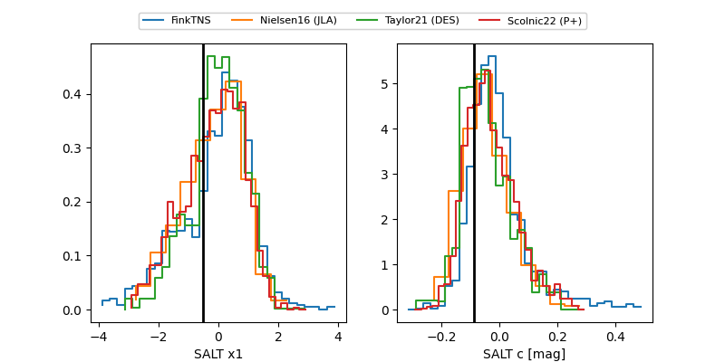

2026das
Target 2026das at 2026-03-08 16:14
Aliases and brokers:
FINK: link
Lasair: link
ALeRCE: link
TNS: link
YSE: link
alt names
ZTF26aagjcrp (ztf,fink_ztf)
2026das (tns,yse)
ATLAS26bvw (atlas)
Coordinates:
equatorial (ra, dec) = 122.9144,+24.64126
equatorial (HMS+DMS) = 08:11:39.46,+24:38:28.53
galactic (l, b) = (197.9219,+27.87339)
Flags:
Photometry:
last atlasc=18.71, atlaso=19.02, ztfg=19.45, ztfr=18.99
1 atlasc, 3 atlaso, 10 ztfg, 8 ztfr detections
Lightcurve

Visibility


Additional plots
